01 · Carrer Cabanes · NE
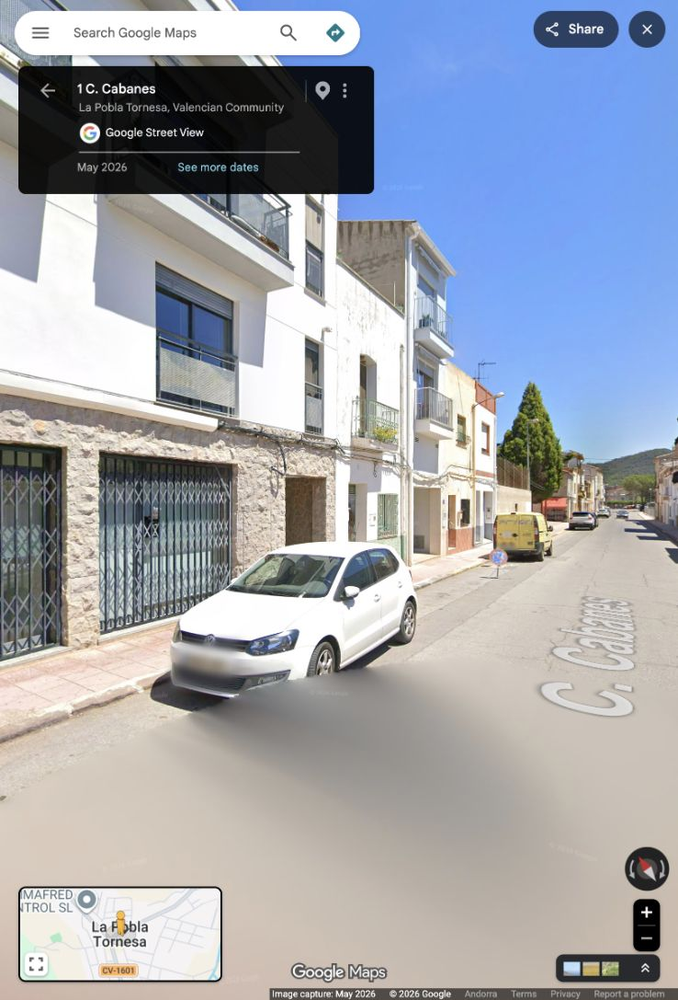
Plaster facades, stone-clad ground floor, balconies, tiled pavement and distant hills.
40.1028927, -0.0010337 · 35° · pitch +0°
Imagery 2026-05 · road[38] Carrer Cabanes · 0.12 m from centerline
Game X 9.91 · Z -92.94
Reopen this view in Google Maps ↗02 · Plaça del Raval · SW
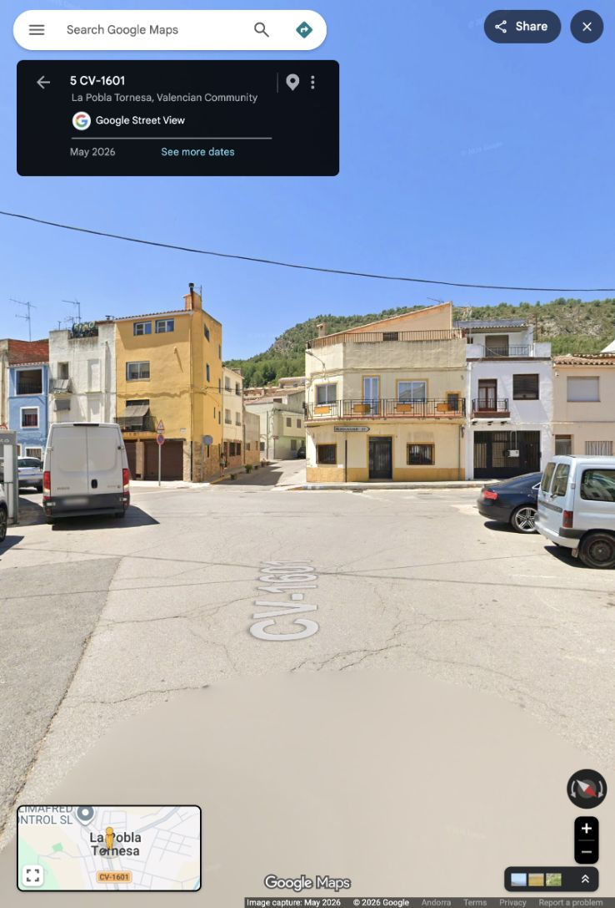
Broad junction, ochre facades and balconies, with hills behind the west side. Google labels this CV-1601; the project labels the camera road Plaça del Raval.
40.1027363, -0.0013719 · 230° · pitch +0°
Imagery 2026-05 · road[43] Plaça del Raval · 0.09 m from centerline
Game X -10.25 · Z -80.75
Reopen this view in Google Maps ↗03 · Carrer d’Enmig · SSE
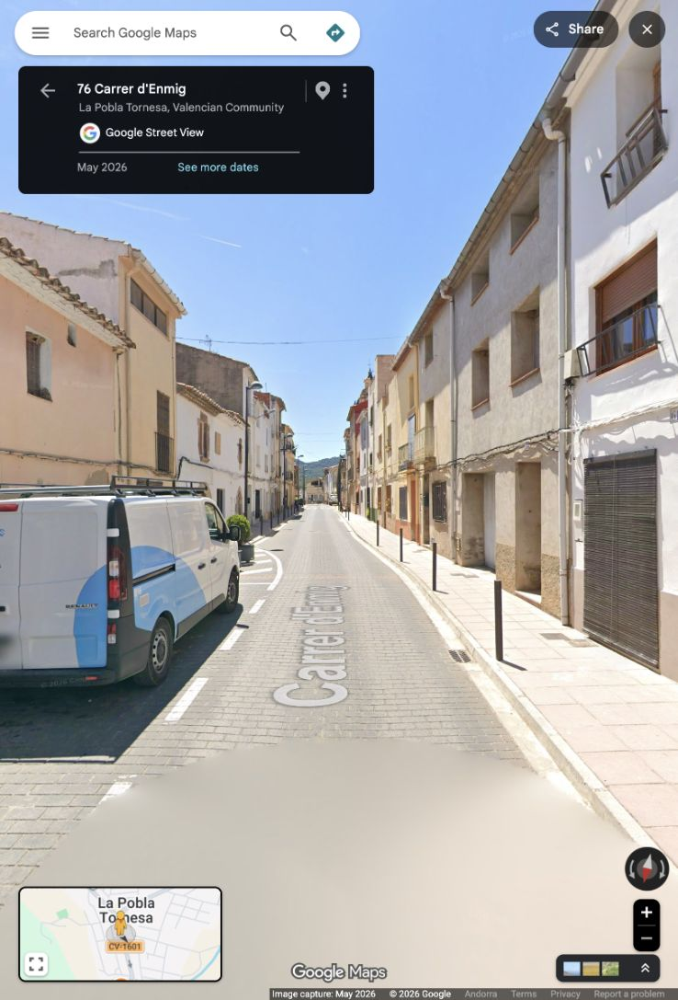
Long paved street corridor with narrow sidewalks, bollards, shutters and balconies.
40.1020519, -0.0013434 · 167° · pitch +0°
Imagery 2026-05 · road[67] carrer d'Enmig · 0.57 m from centerline
Game X -8.55 · Z -27.42
Reopen this view in Google Maps ↗04 · Barreretes covered passage · E
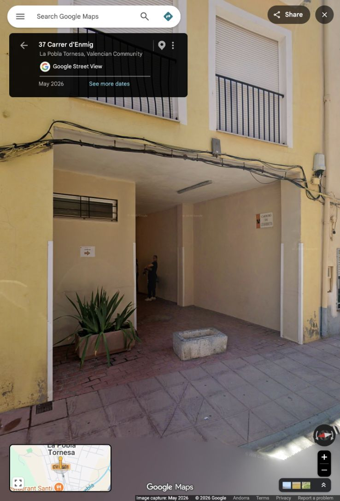
Covered entrance with a visible Carreró de Barreretes sign, yellow plaster, balconies, paving and a stone trough. Camera remains on Carrer d’Enmig.
40.1015177, -0.0011509 · 100° · pitch +0°
Imagery 2026-05 · road[67] carrer d'Enmig · 0.94 m from centerline
Game X 2.93 · Z 14.21
Reopen this view in Google Maps ↗05 · Enmig west-side facades · W
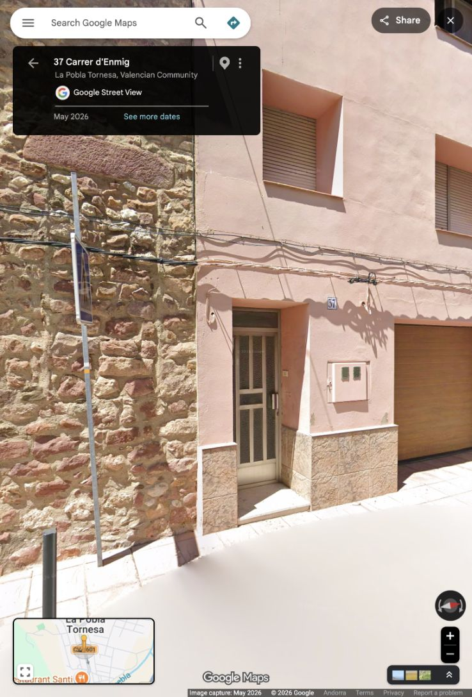
Pink residential frontage and part of the Antiga Presó stone wall on the left. The whole image must not be assigned to the prison footprint.
40.1015177, -0.0011509 · 280° · pitch +0°
Imagery 2026-05 · road[67] carrer d'Enmig · 0.94 m from centerline
Game X 2.93 · Z 14.21
Reopen this view in Google Maps ↗06 · School entrance by Dalt la Vila · WSW
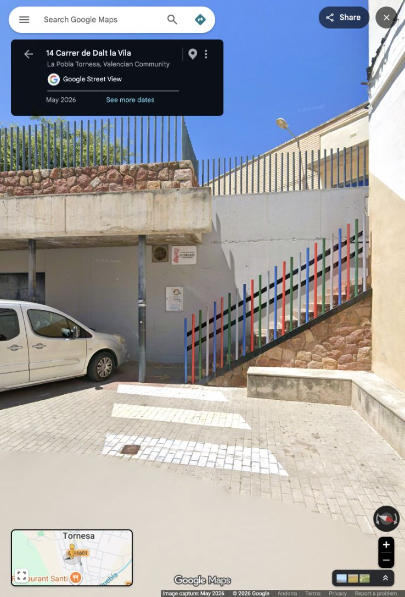
School entrance sign, stairs with colored railings, retaining wall and a paved crossing. Camera on Dalt la Vila, beside the mapped square boundary.
40.1013058, -0.0015783 · 250° · pitch +0°
Imagery 2026-05 · road[27] Carrer de Dalt la Vila · 1.65 m from centerline
Game X -22.55 · Z 30.72
Reopen this view in Google Maps ↗07 · Plaça del Portal · WSW
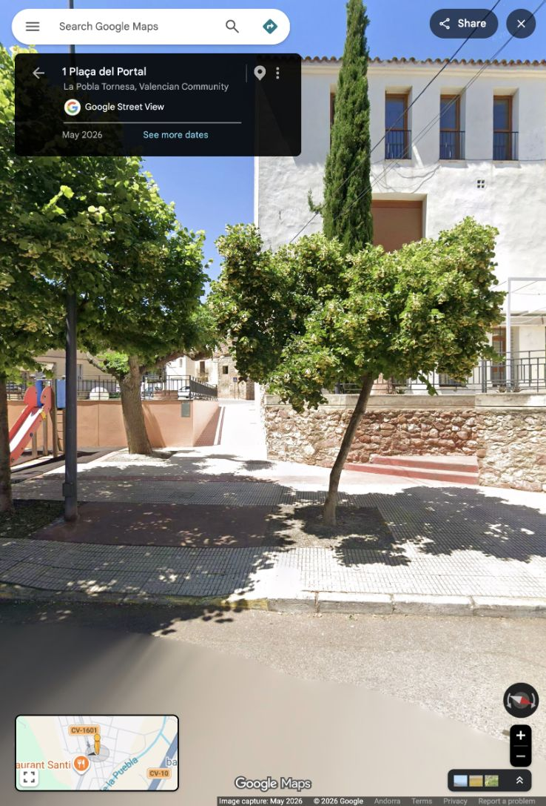
Trees, red bench, stone retaining walls and a playground at the left edge; part of the Casa de la Cultura frontage is behind the trees.
40.1005967, -0.0003904 · 250° · pitch +0°
Imagery 2026-05 · road[44] Plaça del Portal · 1.19 m from centerline
Game X 48.26 · Z 85.97
Reopen this view in Google Maps ↗08 · Plaça del Portal · NNW
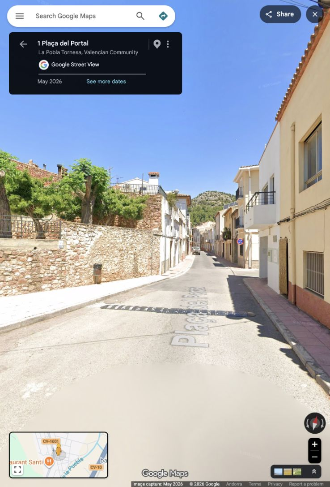
Street corridor toward Baix la Vila, stone wall with a drinking fountain, speed bump and hillside backdrop.
40.1005967, -0.0003904 · 345° · pitch +0°
Imagery 2026-05 · road[44] Plaça del Portal · 1.19 m from centerline
Game X 48.26 · Z 85.97
Reopen this view in Google Maps ↗09 · Carrer de Baix la Vila · NNW
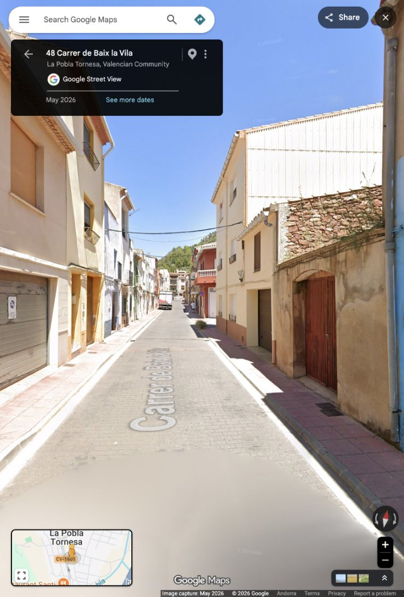
Paved residential street, narrow sidewalks, balconies, a large red doorway and exposed masonry.
40.1016815, -0.0006551 · 348° · pitch +0°
Imagery 2026-05 · road[87] Carrer de Baix la Vila · 0.03 m from centerline
Game X 32.48 · Z 1.44
Reopen this view in Google Maps ↗10 · Baix les Cases corner detail · S
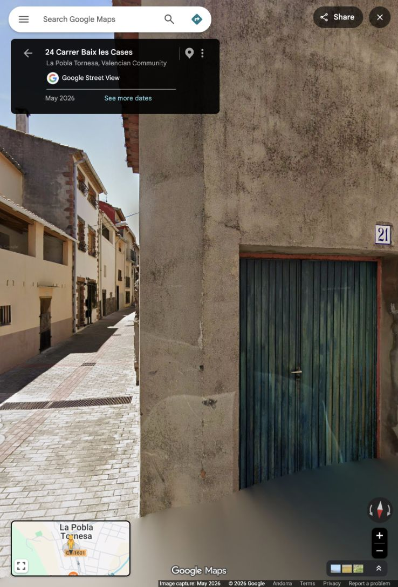
Close plaster wall and green door numbered 21, with the narrow lane visible to the left. Use image 20 for a clearer view along the lane.
40.1018690, -0.0014863 · 175° · pitch +0°
Imagery 2026-05 · road[37] Carrer de Baix les Cases · 0.02 m from centerline
Game X -17.06 · Z -13.17
Reopen this view in Google Maps ↗11 · Tossal de la Vila · SSE
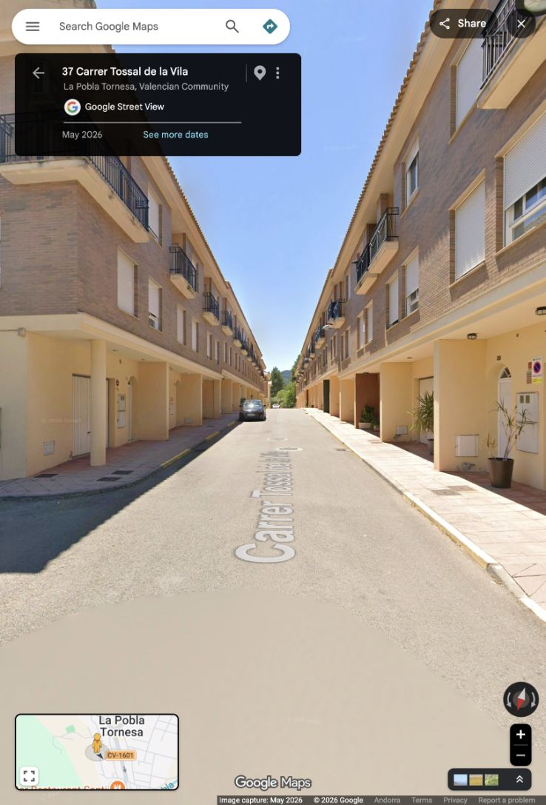
Matching rows of brick-and-plaster housing, balconies and recessed ground floors. The construction date is not established by this image.
40.1017303, -0.0024820 · 162° · pitch +0°
Imagery 2026-05 · road[65] Carrer Tossal de la Vila · 1.14 m from centerline
Game X -76.41 · Z -2.36
Reopen this view in Google Maps ↗12 · Carrer de Vilafamés · NW
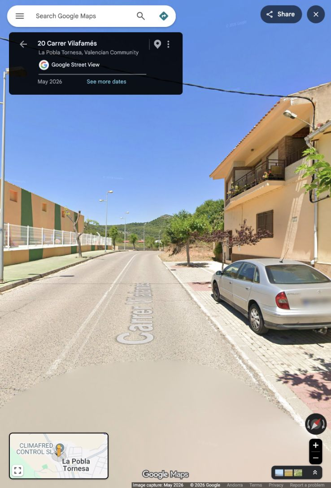
Broader approach road, low buildings, planted sidewalks, railing and hillside backdrop.
40.1035617, -0.0026978 · 320° · pitch +0°
Imagery 2026-05 · road[11] Carrer de Vilafamés · 2.40 m from centerline
Game X -89.28 · Z -145.07
Reopen this view in Google Maps ↗13 · Calvari–Constitució junction · NNW
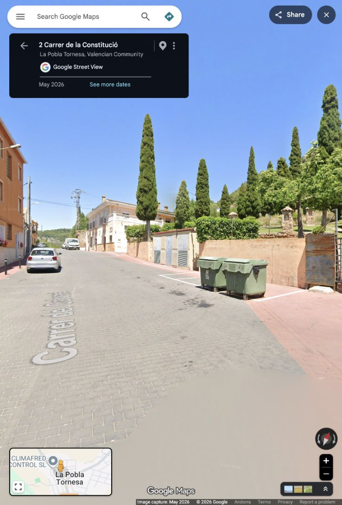
View along Calvari with a landscaped rise, cypresses, steps, retaining wall and curbside bins. Camera is nearest the Constitució road feature.
40.1033369, -0.0018949 · 335° · pitch +0°
Imagery 2026-05 · road[31] Carrer de la Constitució · 0.76 m from centerline
Game X -41.42 · Z -127.55
Reopen this view in Google Maps ↗14 · Plaça de l’Hospital · E
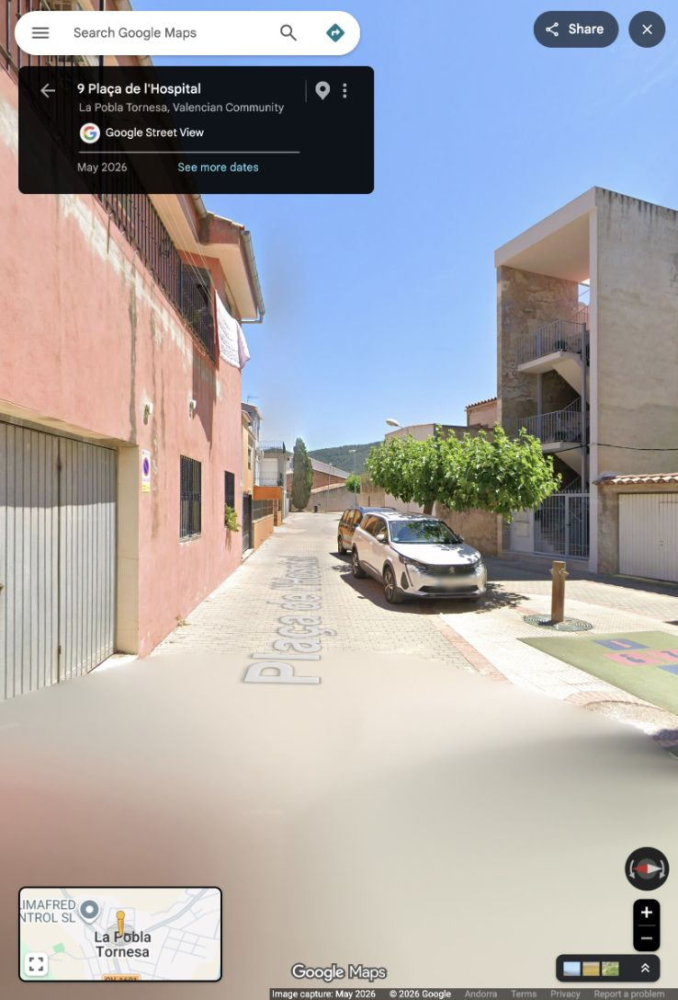
Paved street and small square with balconies, street trees, parked cars and painted play surfacing at the right edge.
40.1032537, -0.0011723 · 90° · pitch +0°
Imagery 2026-05 · road[89] Plaça de l'Hospital · 0.13 m from centerline
Game X 1.65 · Z -121.07
Reopen this view in Google Maps ↗15 · Carrer de Benicàssim · WNW
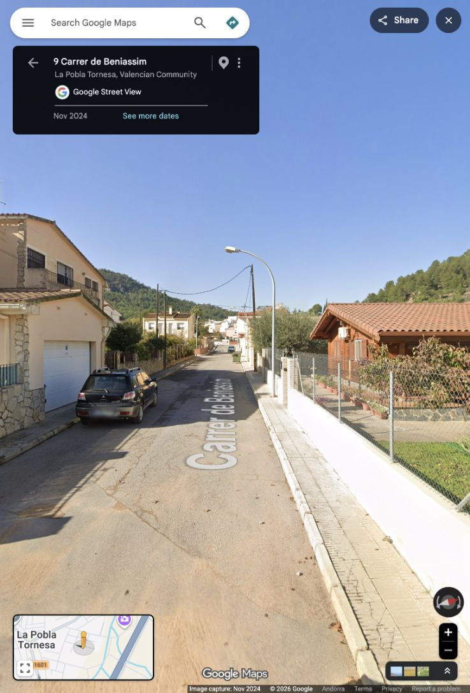
Detached homes, gardens, fences, terracotta roofs and a view toward the hills. Google displays the spelling Beniassim.
40.1024959, 0.0021177 · 285° · pitch +0°
Imagery 2024-11 · road[23] Carrer de Benicàssim · 1.45 m from centerline
Game X 197.75 · Z -62.02
Reopen this view in Google Maps ↗16 · Carrer de les Eres west facade · WSW
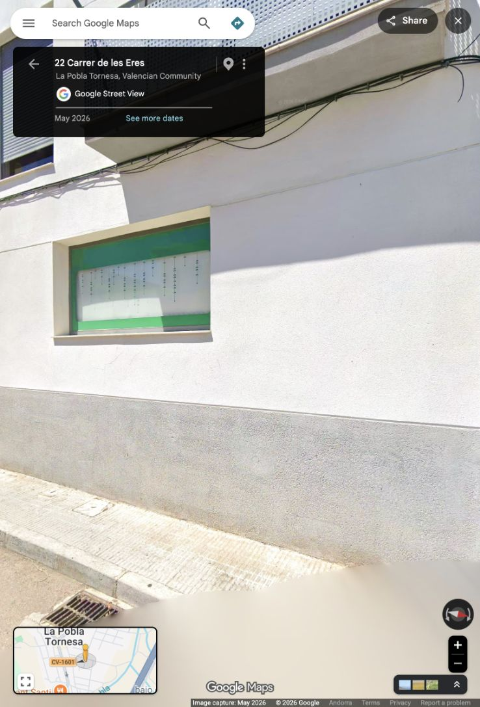
Close white facade, green-framed window, exterior wiring, sidewalk and drain. The requested Riu junction resolves to a camera just south on Eres; this image does not show the Riu street corridor.
40.1016724, 0.0003645 · 258° · pitch +0°
Imagery 2026-05 · road[92] Carrer de les Eres · 0.45 m from centerline
Game X 93.25 · Z 2.15
Reopen this view in Google Maps ↗17 · Molí de Foc south approach · NNE
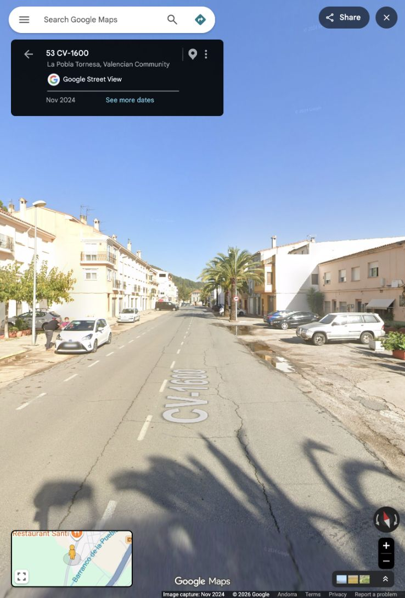
Broad approach road, palms, housing, curbside parking and puddles. Google labels the road CV-1600.
40.0985595, -0.0016554 · 20° · pitch +0°
Imagery 2024-11 · road[50] Carrer del Molí de Foc · 1.92 m from centerline
Game X -27.14 · Z 244.72
Reopen this view in Google Maps ↗18 · Plaça de l’Ajuntament public building · NE
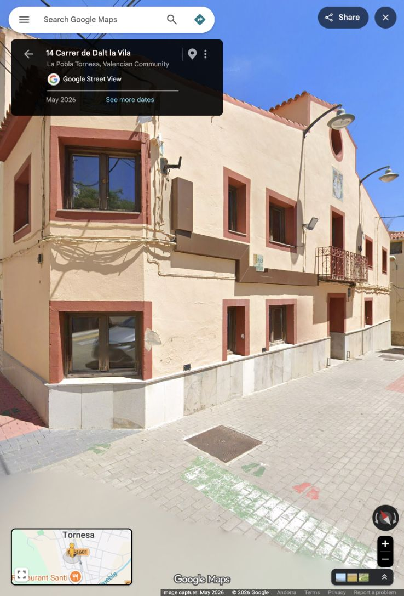
Public building with ochre plaster, red window trim, crest, balcony and accessible ramp; matches the unnamed public footprint in the dataset. Do not confuse it with the separately mapped current town hall.
40.1013058, -0.0015783 · 35° · pitch +0°
Imagery 2026-05 · road[27] Carrer de Dalt la Vila · 1.65 m from centerline
Game X -22.55 · Z 30.72
Reopen this view in Google Maps ↗19 · Ajuntament / Casa de la Vila · SE
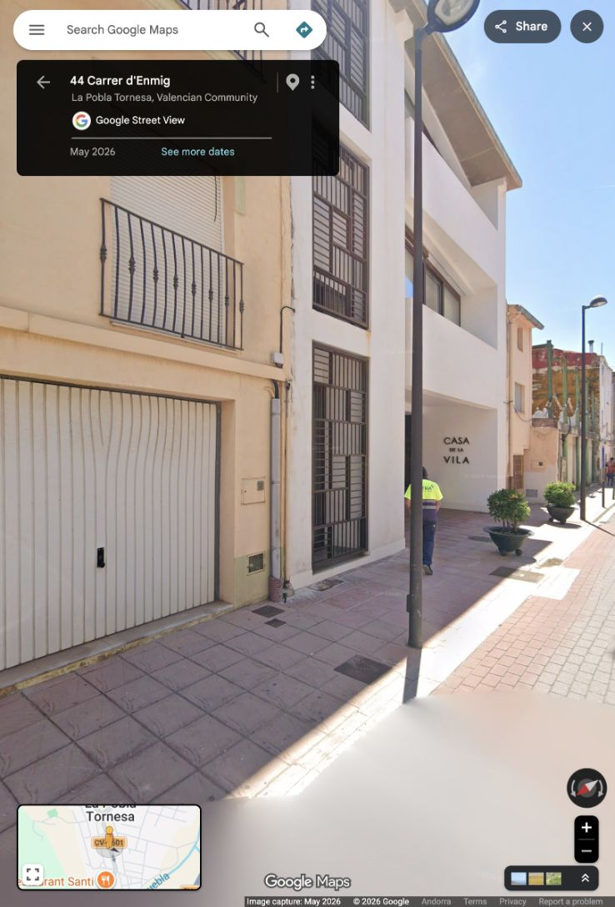
Town-hall frontage with visible CASA DE LA VILA lettering, tall windows, planters and paved sidewalk.
40.1014297, -0.0011169 · 125° · pitch +0°
Imagery 2026-05 · road[67] carrer d'Enmig · 1.84 m from centerline
Game X 4.95 · Z 21.06
Reopen this view in Google Maps ↗20 · Carrer de Baix les Cases · SSE
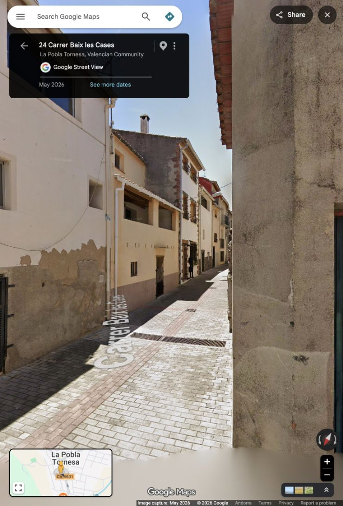
Narrow paved lane with worn plaster, drainage channels, small windows and a corner wall on the right.
40.1018690, -0.0014863 · 150° · pitch +0°
Imagery 2026-05 · road[37] Carrer de Baix les Cases · 0.02 m from centerline
Game X -17.06 · Z -13.17
Reopen this view in Google Maps ↗21 · Carrer de les Eres · NNE
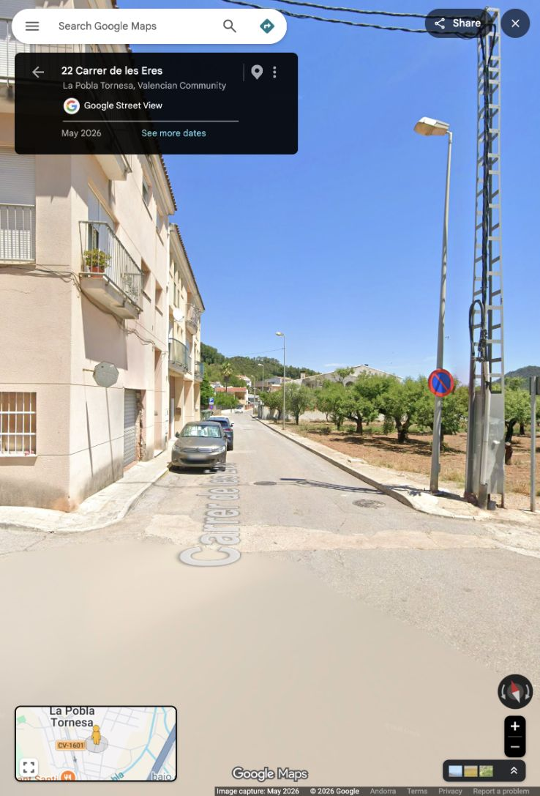
Northward corridor with apartment facades on the left and cultivated trees on the right, plus streetlights and a utility pole.
40.1016724, 0.0003645 · 20° · pitch +0°
Imagery 2026-05 · road[92] Carrer de les Eres · 0.45 m from centerline
Game X 93.25 · Z 2.15
Reopen this view in Google Maps ↗22 · Church entrance · W
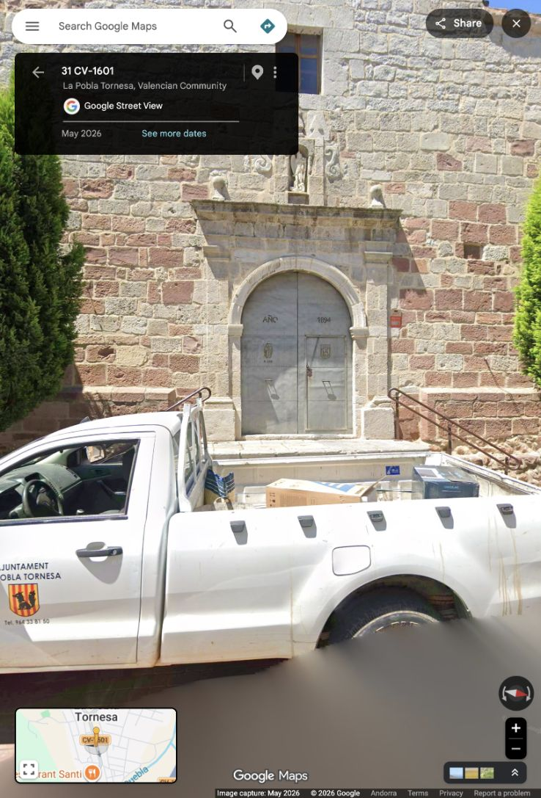
Stone church doorway and steps between cypresses. A municipal pickup partly obscures the lower frontage. The church footprint is absent from the dataset; use the camera point and bearing, not another building’s ID.
40.1013414, -0.0010826 · 260° · pitch +0°
Imagery 2026-05 · road[67] carrer d'Enmig · 2.25 m from centerline
Game X 7.00 · Z 27.94
Reopen this view in Google Maps ↗23 · Church facade and tower · W, +30°
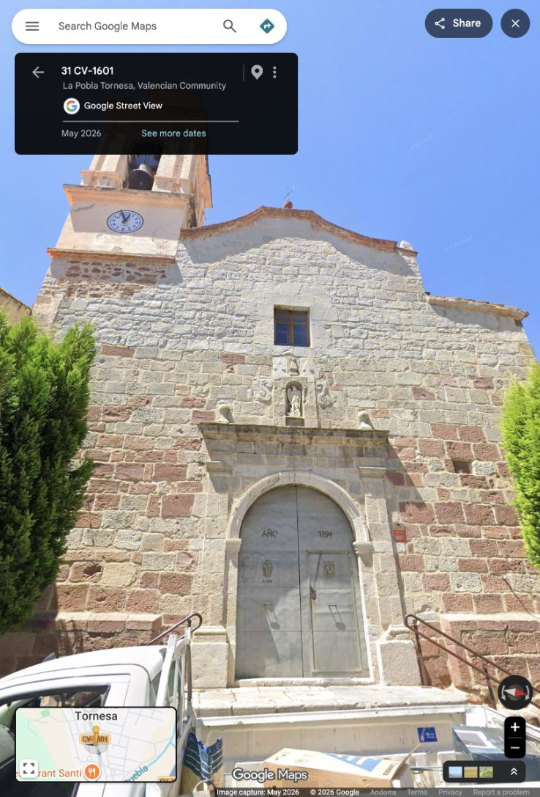
Upward view of the same church: masonry facade, doorway, statue niche, clock and bell tower. The Google information panel obscures part of the tower; a vehicle remains at the bottom.
40.1013414, -0.0010826 · 260° · pitch +30°
Imagery 2026-05 · road[67] carrer d'Enmig · 2.25 m from centerline
Game X 7.00 · Z 27.94
Reopen this view in Google Maps ↗24 · Antiga Presó · SW
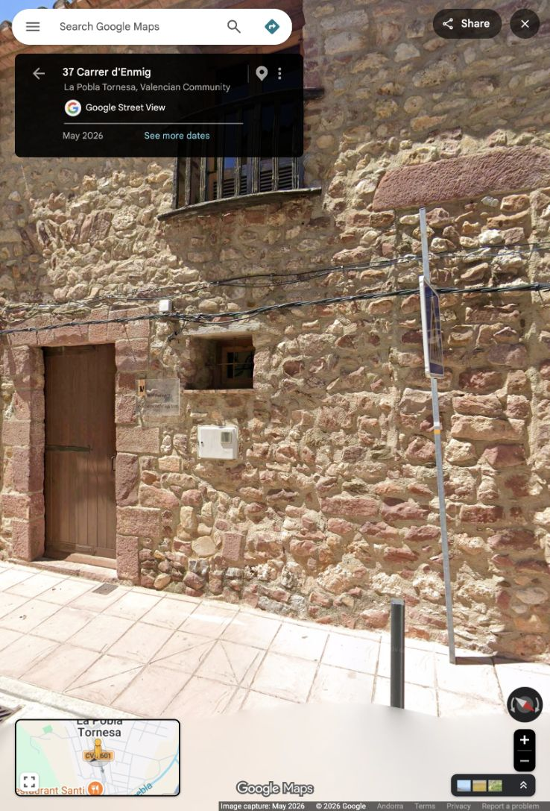
Stone facade with wooden door, barred windows and a visible Presó plaque; matches the Antiga Presó footprint.
40.1015177, -0.0011509 · 235° · pitch +0°
Imagery 2026-05 · road[67] carrer d'Enmig · 0.94 m from centerline
Game X 2.93 · Z 14.21
Reopen this view in Google Maps ↗